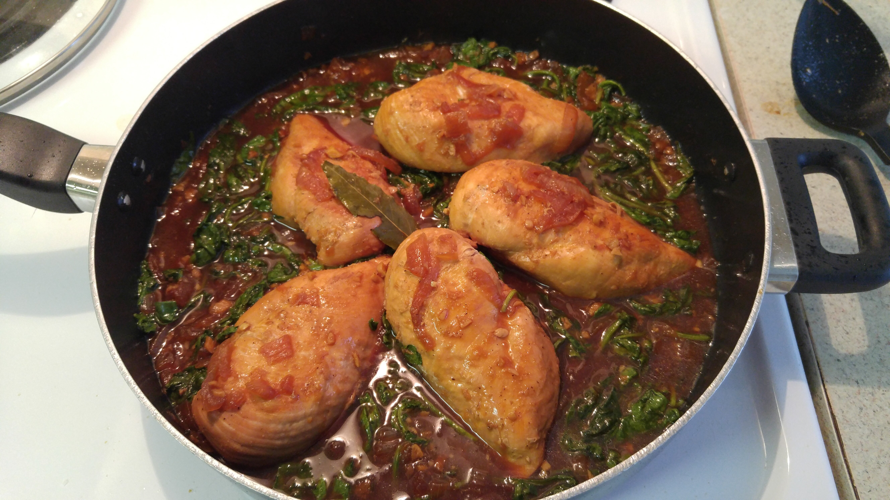

Chicken Adobo

Description
Chicken Adobo is a type of Filipino chicken stew. Chicken pieces are marinated in soy sauce and spices, pan-fried, and stewed until tender. The dish gained popularity because of its delicious taste and ease in preparation.
Ingredients
- 2 tablespoons vegetable oil
- 1 (3 pound) chicken, cut into pieces
- 1 large onion, quartered and sliced
- 2 tablespoons minced garlic
- 1/3 cup white vinegar
- 2/3 cup low sodium soy sauce
- 1 tablespoon garlic powder
- 2 teaspoons black pepper
- 1 bay leaf
Steps
- Heat the vegetable oil in a large skillet over medium-high heat.
- Cook chicken pieces until golden brown on both sides, then remove.
- Stir in the onion and garlic; cook until they soften and brown, about 6 minutes.
- Pour in vinegar and soy sauce, and season with garlic powder, black pepper, and bay leaf.
- Add the browned chicken, increase the heat to high, and bring to a boil.
- Reduce heat to medium-low, cover, and simmer until the chicken is tender and cooked through, 35 to 40 minutes.